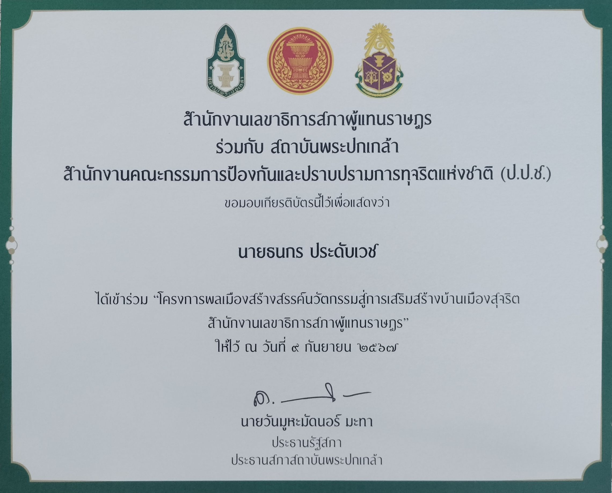
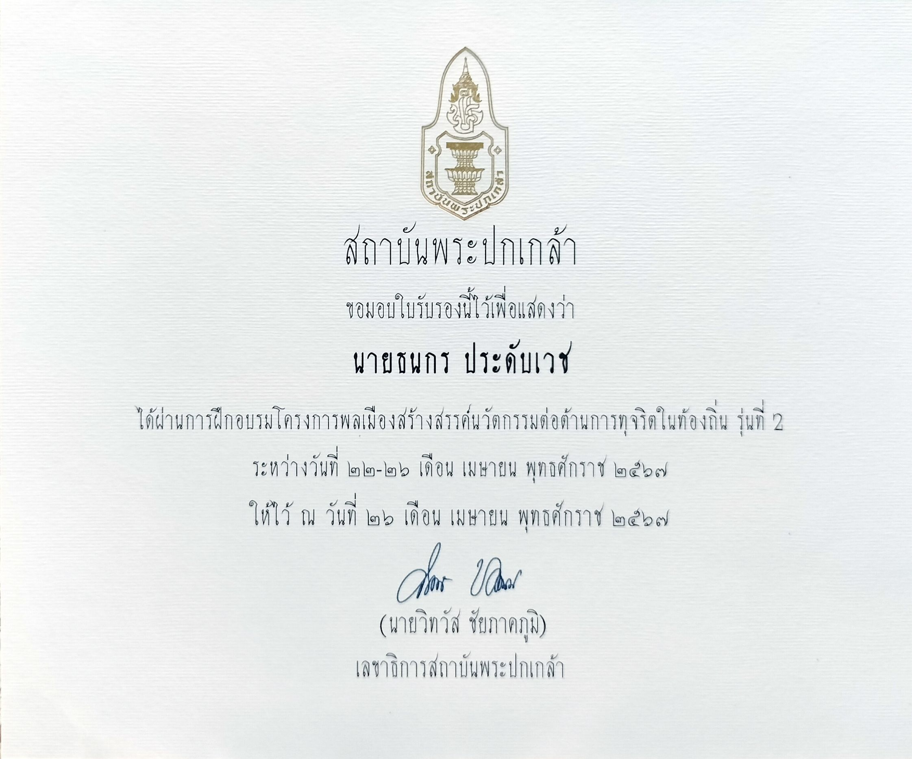
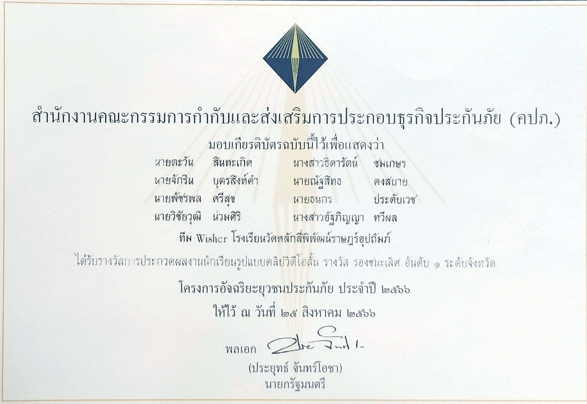
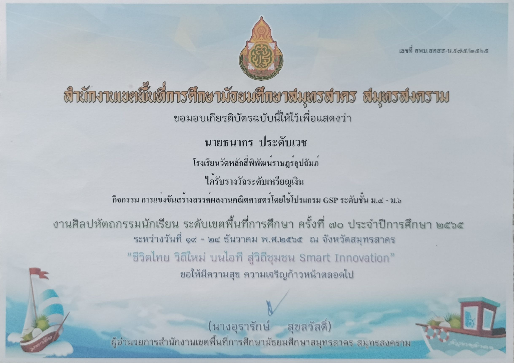
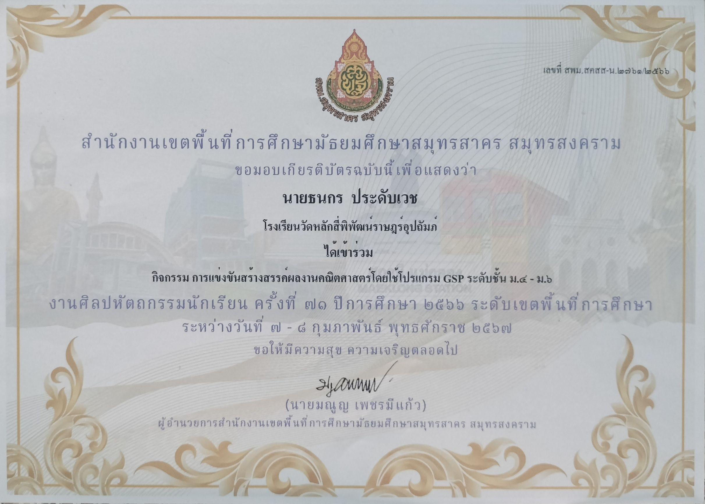
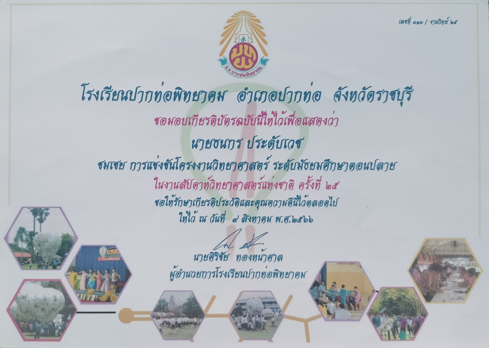
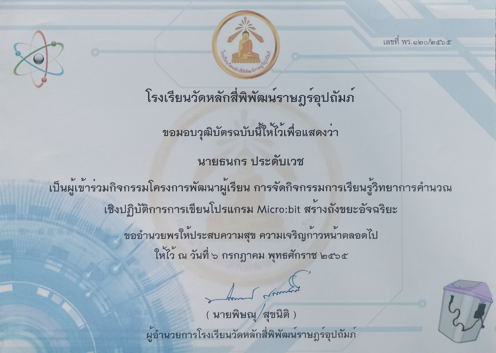
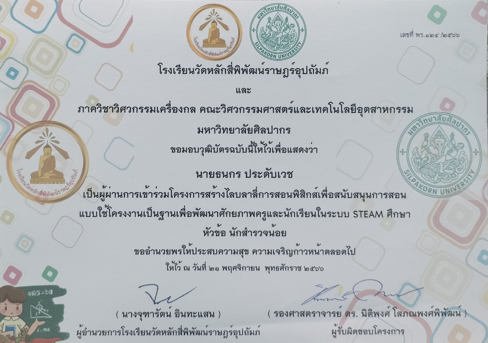
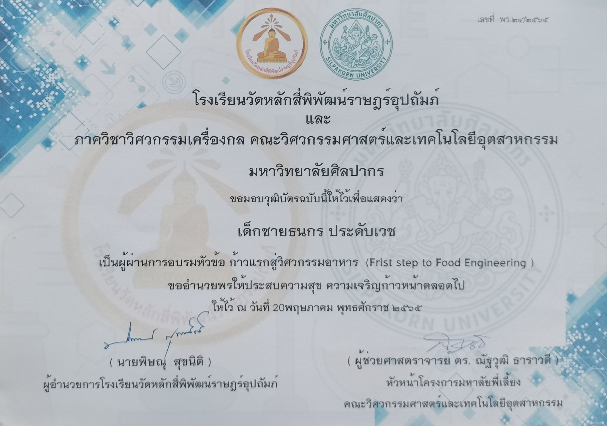
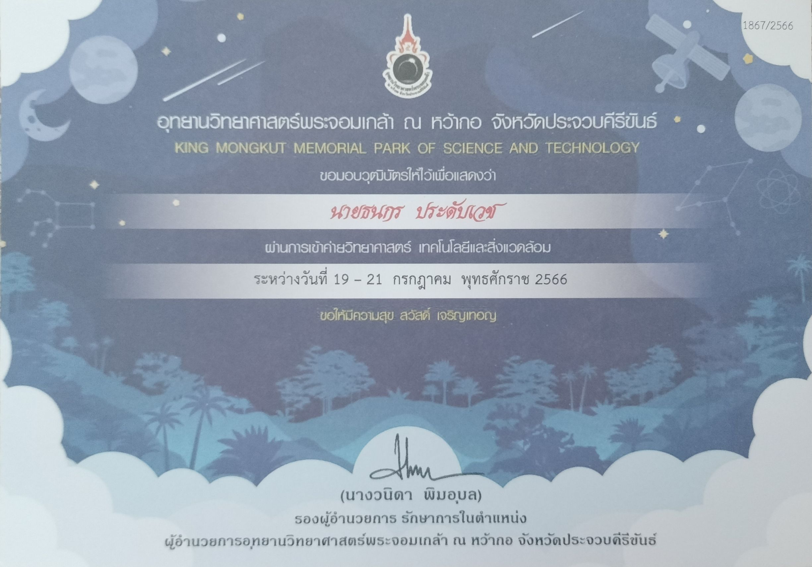

“โครงการพลเมืองสร้างสรรค์นวัตกรรมสู่การเสริมสร้างบ้านเมืองสุจริต สำนักงานเลขาธิการสภาผู้แทนราษฎร”
เข้าร่วมการอบรม โครงการพลเมืองสร้างสรรค์นวัตกรรมสู่การเสริมสร้างบ้านเมืองสุจริต สำนักงานเลขาธิการสภาผู้แทนราษฎร

“โครงการพลเมืองสร้างสรรค์นวัตกรรมต่อต้านทุจริตในท้องถิ่น รุ่นที่2"
ได้รับการคัดเลือกเป็น 1 ใน 20ทีม จาก30ทีม ต่อมาได้รับการคัดเลือกเป็น 1 ใน 10ทีมสุดท้าย และได้รับโล่ “โครงการสร้างสรรค์นวัตกรรมสู่การเสริมสร้างบ้านเมืองสุจริต” และเงินจัดทำโครงการต่อ เป็นจำนวนห้าหมื่นบาท

“โครงการอัจฉริยะยุวชนประกันภัย ประจำปี 2566"
ได้รับรางวัล รองชนะเลิศอันดับ1 ระดับจังหวัด รับรองโดยท่าน พลเอกประยุทธ์ จันทร์โอชา ณ วันที่ 25 สิงหาคม 2566

“การแข่งขันสร้างสรรค์ผลงานคณิตศาสตร์โดยใช้โปรแกรม GSP ม.4-ม.6"
“การแข่งขันสร้างสรรค์ผลงานคณิตศาสตร์โดยใช้โปรแกรม GSP ม.4-ม.6" งานศิลปหัตถกรรมนักเรียน ครั้งที่ 70 ได้รับรางวัลระดับเหรียญเงิน

“การแข่งขันสร้างสรรค์ผลงานคณิตศาสตร์โดยใช้โปรแกรม GSP ม.4-ม.6"
“การแข่งขันสร้างสรรค์ผลงานคณิตศาสตร์โดยใช้โปรแกรม GSP ม.4-ม.6" งานศิลปหัตถกรรมนักเรียน ครั้งที่ 71

“การแข่งขันโครงงานวิทยศาสตร์ ระดับมัธยมตอนปลาย” ในงานสัปดาห์วิทยาศาสตร์แห่งชาติ ครั้งที่25
เข้าร่วม “การแข่งขันโครงงานวิทยศาสตร์ ระดับมัธยมตอนปลาย” ในงานสัปดาห์วิทยาศาสตร์แห่งชาติ ครั้งที่25

เข้าร่วม KU ENGINEERING OPEN HOUSE ในคณะวิศวะกรรมศาสตร์
ได้เข้าร่วม KU ENGINEERING OPEN HOUSE ในคณะวิศวะกรรมศาสตร์ วิทยาเขตบางเขน

โครงการพัฒนาผู้เรียน การจัดกิจกรรมการเรียนรู้วิทยาการคำนวณ เชิงปฏิบัติการ การเขียนโปรแกรม Micro:bit สร้างถังขยะอัจฉริยะ
ได้เข้าร่วมโครงการพัฒนาผู้เรียน การจัดกิจกรรมการเรียนรู้วิทยาการคำนวณ เชิงปฏิบัติการ การเขียนโปรแกรม Micro:bit สร้างถังขยะอัจฉริยะ

“โครงการสร้างไลบลาลี่การสอนฟิสิกส์เพื่อสนับสนุนการสอน แบบใช้โครงงานเป็นฐานเพื่อพัฒนาศักยภาพครูและนักเรียนในระบบ STEAM”
ผ่านการเข้าร่วม “โครงการสร้างไลบลาลี่การสอนฟิสิกส์เพื่อสนับสนุนการสอน แบบใช้โครงงานเป็นฐานเพื่อพัฒนาศักยภาพครูและนักเรียนในระบบ STEAM”

"ก้าวแรกสู่วิศวกรรมอาหาร (Frist step to Food Engineering)"
เข้าร่วมการอบรมหัวข้อ ก้าวแรกสู่วิศวกรรมอาหาร (Frist step to Food Engineering) ของมหาลัยศิลปากร

"ค่ายวิทยาศาสตร์ เทคโนโลยีและสิ่งแวดล้อม อุทยานวิทยาศาสตร์พระจอมเกล้า"